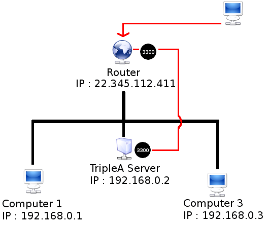
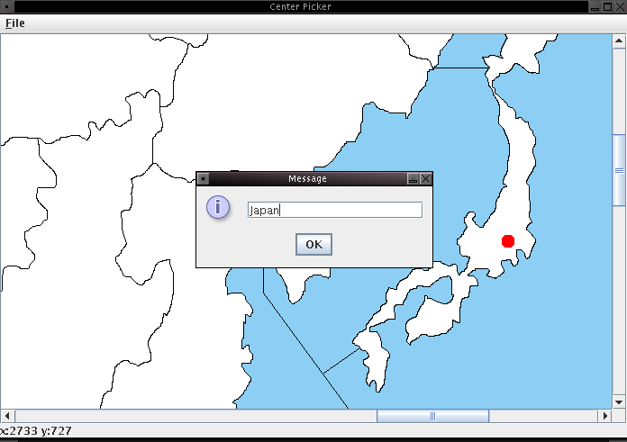
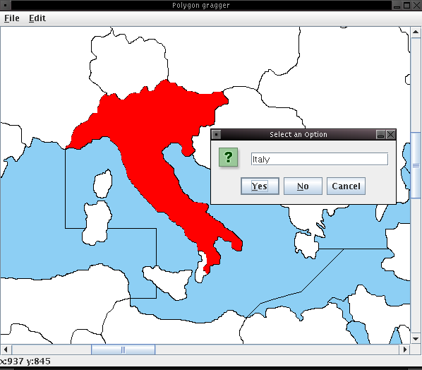
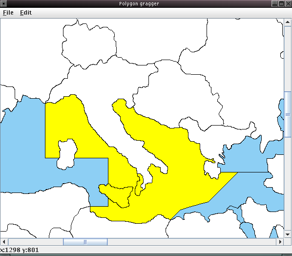
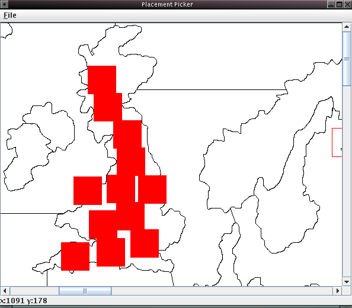
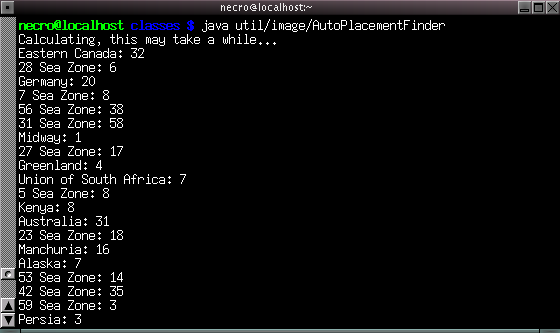
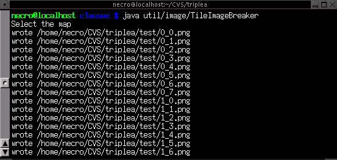

This Document Is Accurate For TripleA v0.6.0.1
Written by George El-Haddad
Revision 1.0
! NOTE !
This document is still incomplete and will be update soon.
Sections 5.3.12 to 8.2 and 10.0 are still being worked on.
TripleA's source code is managed through the use of Source-Forge's Concurrent Versions System (CVS) server. Developers use CVS to read, write, remove, and revert files for the TripleA project.
Not all developers use the same Operating System and not all use the same development environment. For this reason, we cannot show a proper guide that would suite everyone. This section will focus on how to use the CVS from a UNIX based console. This would work on most systems such as Mac OS X, GNU/Linux, and SGI/IRIX. IDEs such as Eclipse that provides a CVS front end will not be covered. It is recommended that developers find out the capabilities of their development environment and see if there is support for CVS or not.
Sections 1.1 and 1.2 will briefly explain some basic commands that will get a developer started. It is highly recommended to read the official CVS manual on how to use the CVS, as it is very explicit and detailed.
This section provides some basic CVS commands that would interest developers. We assume you have CVS already installed and have access to some sort of UNIX console like bash or tcsh.
1.1.1 Module Check Out
A check out will allow you to have a complete copy of the source code on your computer. It also sets up all the necesary CVS related files to keep track of various versions and revisions of each individual source file.
- Set the CVS_RSH environment variable to ssh
- Go to a suitable directory where you wish to have TripleA checked out
- Run the command to check out the TripleA module
Helpful Information In the example below; USERNAME would be the developer's source-forge account. That means if you are a developer, you will put your source-forge user name in place of USERNAME.
Checking out a module. export CVS_RSH=ssh
cvs -d:ext:USERNAME@cvs.sf.net:/cvsroot/triplea checkout triplea
When prompted to input a password; enter the appropriate password corresponding with the user name chosen for the check out command. CVS will download the current CVS source tree for TripleA to your computer in the current working directory.
1.1.2 Commiting Items
The commit command will physically upload any changes made to the CVS copy on your computer to the CVS tree on Source-Forge. This command can be used in a few different ways:
- To commit a single file or directory
- To commit multiple files or directories
- 1 & 2 with a single message
Commit a single file cvs -d:ext:USERNAME@cvs.sf.net:/cvsroot/triplea commit SourceFile.java
Commit a single file cvs commit SourceFile.java
Helpful Information You can commit a change by issuing the the commit command alone or with all the user options and module names. Either will work. Wild cards such as * can also be used to specify multiple files and/or directories. If you just run the commit command alone without specifying a file. It will recursively scan all files and directories and commit those that have changed from the on-line CVS Tree.
Commit a single directory cvs commit new_dirWhen commiting a change in the way shown above, you will be prompted to enter a message using the system default console text editor (ie. nano or pico). Sometimes this is useful when you want type a long and detailed description. There is a way to commit changes without having an editor open after ever commit; that is to commit a change with the message in the command line.
Commit with a message. cvs commit SourceFile.java -m "fix was aplied to lines 345"1.1.3 Adding Items
Adding items to the CVS tree is relatively simple. There are three most commonly faced situations when adding items to the CVS tree.
Adding items to the CVS tree is different from commiting items. When you add a file; it is queued for addition on the CVS server. If and only if the file has been added, then you can finally commit it to the CVS tree.
- Adding a source file (ie. source code)
- Adding a binary file (ie. images, pdfs ..etc)
- Adding a directory
Adding a source file. cvs add MySourceFile.java
cvs commit
Helpful Information When a binary file is committed without the -kb option it will make the file be saved in a textual format.
Although this does not pose any problems to UNIX based systems, it does for developers who use Microsoft Windows.
Adding a binary file. cvs add -kb Some_Image.png
cvs commit
Adding a directory. mkdir new_directory
cvs add new_directory
cvs commit
1.1.4 Removing Items
Removing items from the CVS tree works in a similar way to adding items. The item to be removed will be removed from your local CVS copy but will remain in the on line CVS tree. Removing it will basically make it "hidden." So in other words, nothing is ever deleted from the on line tree, only hidden.
To remove a file from the CVS, one must follow three simple steps:
- Physically remove the file from the local CVS tree
- Issue the cvs command to remove the file from the on line CVS tree
- Commit the changes
Removing a file. rm SourceFile.java
cvs remove
cvs commit
Removing a file with a message. rm SourceFile.java
cvs remove
cvs commit -m "no longer needed"
Removing directories works in a similar way, except for one thing. The directory to be removed needs to have all of its contents removed first. Below is an example of how to remove a directory that is filled with source files.
Removing a full directory. cd myDir
rm *.java
cvs remove
cvs commit
cd ..
cvs remove myDir
rm -rf myDir
cvs commit
Helpful Information When issuing the remove command by it self, it will recurse through all the files and directories and queue for removal all files that have been manually deleted.
You can specify what file you want it to queue for removal by appending the file name after the word remove.1.1.5 Tagging Items
Normally, before pushing out a release, we tag all the files in the CVS with a name. This tag allows us to identify what branch we're working on and for which version of TripleA it was included into. There are at least two tag names we use (please not that the upper-case Xs represent the version number of TripleA):
To tag the CVS tree before a release; we run the command from the root directory of TripleA. That way every file and directory gets tagged.
- sX-X-X-release : Stable release
- uX-X-X-release : Unstable release
Tagging the CVS Tree. cvs tag s0-6-0-release1.1.6 Updating Your CVS Copy
It is very important for a developer to keep their local copy of the CVS as up-to-date as possible. One can achieve this goal by running the update command from the cvs. It will synchronize your local copy to the remote copy on the CVS server. Has the ability to download all new files and even remove files (on your local copy) that have been removed (hidden) from the CVS Tree.
In the root folder of TripleA run the command below. This will update all files and directories recursively. This will not remove un-wanted files.
Updating the local CVS copy. cvs update
The example below will perform the update and will remove any empty folders or files that have been removed from the on-line CVS Tree. The -q switch will make the CVS only echo a status message when a file has been updated.
Updating the local CVS copy with options. cvs -q update -dAP1.1.7 Viewing Changes
To keep track of the who has been changing what files, for what reason, and when is easily done with the annotate command provided by CVS. Given the file name; it will annotate every single line of the source file telling you when each line was modified and by whom. Normally this output is echoed right into the console, but with simple Shell commands you can pipe it to a text file.
Basic annotation. cvs annotate SourceFile.java
Annotate to a file. cvs annotate SourceFile.java > AnnotatedFile.txt
Example of an annotated file. 1.34 (userOne 19-Feb-05): if (sentinel != null)
1.29 (userTwo 11-Apr-04): return false;
1.29 (userTwo 11-Apr-04):
1.29 (userTwo 11-Apr-04): if (t_sec > (x+y))
1.27 (userOne 10-Apr-04): return false;
1.2 CVS For Non-Developers
Accessing the TripleA CVS tree is not only for developers. Non-developers have access to it. They can check out the TripleA module and keep it up-to-date with the very latest changes. They, however, cannot make changes to the CVS tree; only read access is granted to non-developers.
In this section we assume you have CVS already installed and have access to some sort of UNIX console like bash or tcsh.
1.2.1 Module Check Out
A check out will allow you to have a complete copy of the source code on your computer. It also sets up all the necesary CVS related files to keep track of various versions and revisions of each individual source file.
- Set the CVS_RSH environment variable to ssh
- Go to a suitable directory where you wish to have TripleA checked out
- Run the command to check out the TripleA module
Checking out a module. export CVS_RSH=ssh
cvs -d:pserver:anonymous@cvs.sourceforge.net:/cvsroot/triplea checkout triplea
The above command will allow anonymous access to check out a copy of the CVS tree. Once the triplea module has been checked out and saved on your system, you can do whatever you want with it. The only restriction is that you are not allowed to add or commit changes to the CVS tree that is on line. Those actions are reserved for developers who log in to the CVS with their SourceForge accounts.
1.2.2 Updating Your CVS Copy
Once a copy of the triplea CVS module has been checked out, it can be kept up-to-date by running the update command. It will synchronize your local copy to the remote copy on the CVS server. It Has the ability to download all new files and even remove files (on your local copy) that have been removed (hidden) from the CVS Tree.
In the root folder of TripleA run the command below. This will update all files and directories recursively. This will not remove un-wanted files.
Updating the local CVS copy. cvs update
The example below will perform the update and will remove any empty folders or files that have been removed from the on-line CVS Tree. The -q switch will make the CVS only echo a status message when a file has been updated.
Updating the local CVS copy with options. cvs -q update -dAP1.2.3 Viewing Changes
To keep track of the who has been changing what files, for what reason, and when is easily done with the annotate command provided by CVS. Given the file name; it will annotate every single line of the source file telling you when each line was modified and by whom. Normally this output is echoed right into the console, but with simple Shell commands you can pipe it to a text file.
Basic annotation. cvs annotate SourceFile.java
Annotate to a file. cvs annotate SourceFile.java > AnnotatedFile.txt
Example of an annotated file. 1.34 (userOne 19-Feb-05): if (sentinel != null)
1.29 (userTwo 11-Apr-04): return false;
1.29 (userTwo 11-Apr-04):
1.29 (userTwo 11-Apr-04): if (t_sec > (x+y))
1.27 (userOne 10-Apr-04): return false;
2.0 Compiling The TripleA Source Code
This section will go through the various details on how to successfully compile the TripleA source code in order to get a runnable copy. TripleA can be compiled in many different ways and with many different IDEs. For consistency and all around compatibility; TripleA must be able to be compiled using the Java compiler by Sun Micro systems and the compilation process be controlled by Apache's ANT. All these tools are to be run from the command line.
2.1 Prerequisites
There are a few prerequisites that need to be fulfilled before attempting to start compilation process. We assume that the following packages (listed below) are fully and properly installed.
- Apache ANT (http://ant.apache.org)
- Sun Micro Systems Compliant Java JDK (http://java.sun.com)
- Junit (http://www.junit.org)
These packages can be installed on various operating systems which include GNU/Linux, SGI/IRIX, MS/Windows, Mac OS X, and others that allow for it.
2.2 ANT Commands
These are a list of command line parameters that can be used with ANT on TripleA. Each command tells ANT to do something different with the TripleA source code.
Command Description ant compile Compiles all TripleA source code files. Compiled classes are placed in the classes folder. ant compileClean Removes previously compiled folders such as the classes, release, and savedGames folders. Once the removal is successful, it will compile the TripleA source files. ant clean Removes the previously compiled copy of TripleA. This will also remove the savedGames, and release folders that may have been created with other ANT commands. ant zip Cleans, compiles, and packages a compiled copy of TripleA in a Zip file. The zip file is placed in a folder named release. ant zipSource Runs the clean command and then packages all TripleA source files in a Zip file. The Zip file is placed in a folder named release. ant release Runs the clean command, then creates all the release files (except the mac specific builds) and places them in the release folder. This command must be done on a windows machine with NSIS installed. ant patch Constructs a patch.jar file with specified java class files that were indicated in the build.xml document. This patch.jar file can be used for a quick fix. ant javadoc Generates Java Documentation HTML using source code comments. ant test Initiates the JUnit tests. 2.3 Compiling on Microsoft Windows Systems
A complete guide to compiling TripleA on MS/Windows has been generously written by a member of the TripleA community, ZeroPilot.
The first step is to extract the contents of the zip file into a location of your choice. Once you have extracted all the files, you will see a folder named triplea_x_x_x (where x_x_x represent the version number). Note, it has the same name as the pre-compiled package. If you are going to install both the source and the pre-compiled version, it is highly recommended that you create separate directories for them first; if not one will overwrite the other.
Helpful Information Be sure to download the Java SDK SE (Standard Edition) and not the EE (Enterprise Edition.) Most users find it difficult to get the Enterprise Edition working. On top of that you don't need it to compile TripleA.
We assume you have ANT installed, as well as a suitable Java JDK whose version is 1.5 or higher.
Go into the directory where you extracted the TripleA source code. There should be a file named .ant.properties. Open it using MS Wordpad not notepad. If the source package you downloaded somehow did not come with that file, then create one. You can do this by creating an ordinary text file and then renaming it to .ant.properties exactly. This property file includes two peices of information:
Open the .ant.properties file and edit it to include the information below:
- The version number of TripleA
Info For The .ant.properties File triplea.version=X_X_X
For completness sake; this is how my .ant.properties file would look like:
Example Of The .ant.properties File triplea.version=0_8_1
You should consider installing both the Java SDK and ANT at the root level of the C: drive. It is known that ANT in particular sometimes does not like spaces in the path name (nor for the path to be extremely long). You will notice that the typical Windows installation location of Program Files will have a space in its path (the space between Program and Files. It is not known how often this truly causes a problem (if ever), but the "pros" say they install their compiling tools in their root C: directory to avoid pitfalls. Thus it is recommended that we do the same. The last thing we need is "extra" problems.
For simplicity's sake, we shall install both the Java SDK SE and Ant at the root or C: Drive as well as TripleA and JUnit. JUnit is easily installed, you just need to extract the contents of it into its own folder. TripleA just needs to use a single JAR file that comes with JUnit.
Once we have installed the Java SDK SE, JUnit and ANT on your PC, start the Command Prompt (terminal) program. In Windows XP it can be found by navigating through the Start menu:
Location Of The Command Prompt Start -> All Programs -> Accessories -> Command Prompt
In Command Prompt, enter this command and hit the Enter key:
Java Command java -version
The results of that command should show an informational message about the new Java SDK SE that we have just installed. If you see a message about the default Windows Java version then that means that Windows is not recognizing the newly installed Java. If you get an error message saying that the command cannot be found; that means Windows cannot see the Java executable.
Now in Command Prompt enter this ANT command and hit the Enter key:
Ant Command ant -version
You will probably see a message as such:
"Ant is not recognized as a internal or external command, operable program or batch file."Even though the Java SDK SE and ANT have been installed properly, there are instances where they are inaccessible through the command prompt. This can be fixed by modifying the Windows Environment Variables. Find the Environment Variables options in Windows by following the menus below:
Location Of Windows Environment Variables Start -> Control Panel -> System -> Advanced (tab) -> Environmental Variables (button)
Here we will add information for Windows to recognize both programs so it will pass your Command Prompt calls to the right place. You will want to make the following additions to the "User Variables" section at the top and NOT the System Variables.
There is no good reason to make these additions as System Variables unless you absolutely need all user accounts on your PC to be able to run these command line programs. Messing around with System Variables is risky because (unlike the User Variables) it has the potential to really mess up the system if you enter something wrong. So let's take the safe road and simply enter the following as User Variables.
The Variable Name should be entered exactly as indicated. The Variable Value will be your exact path to the Java SDK SE folder. This may vary depending on where Java was installed. In this document we will go by the example that Java and ANT are installed in the Root level of C: Drive. Under "User Variables", (not system variables) click on the "New" button and enter the following information:
Java User Variable Variable name: JAVA_HOME
Variable value: C:\j2sdk1.5_06
ANT User Variable Variable name: ANT_HOME
Variable value: C:\apache-ant-1.6.2
Helpful Information The easiest way to get this path exactly correct is to open the Java SDK SE folder and select a subfolder inside (bin folder, for example) then view the properties on it. The "Location" shown in the properties window will be the path you need to enter here, and you can simply select it and copy/paste it in to avoid any typos.
The next step is to add both Java SDK SE and ANT's paths into the User Variables. The Variable Name field should be entered exactly as shown. The Variable Value field will display the exact paths to the BIN folders located inside both the Java SDK and Ant folders. The two entries separated by a semi-colon ";" and no spaces between them. Be sure to include the trailing slash "\" after bin in the path names.
Path Variable Variable name: PATH
Variable value: C:\j2sdk1.5_06\bin\;C:\apache-ant-1.6.2\bin\
Click OK on all the Windows to save the new settings. In order for these changes to take effect you must either log out then back in, or restart your computer.
Once you have done that, then fire up the Command Prompt program once again. Enter "java -version" again and hit the Enter key. This time we should see something similar below. Likewise, enter "ant -version" afterwards:
Output of "java -version" Command java version "1.5.0_06"
Java(TM) 2 Runtime Environment, Standard Edition (build 1.5.0_06-b05)
Java HotSpot(TM) Client VM (build 1.5.0_06-b05, mixed mode, sharing)
Output of "ant -version" Command Apache Ant version 1.6.2 compiled on July 16 2004
If you get an error, please recheck your Environmental Variables entries and proofread your paths very carefully. Did you copy/paste the paths to avoid typos? Check if you restarted the computer or logged out/in. Review the instructions again and double check everything. If all goes well you should get the proper returns from your Command Prompt version check.
Now that everything is set up, we can finally compile TripleA! Open the command prompt and go inside the directory where TripleA was installed. For simplicity sake we will pretend that we have installed TripleA at the root level of C: Drive. So going into the TripleA directory would be as shown below:
Entering The TripleA Directory [Step 1] C:>
[Step 2] C:>cd triplea_0_6_0_1
[Step 3] C:\triplea_0_6_0_1>
Once we are inside the TripleA directory (when the command prompt looks like C:\triplea_0_6_0_1>) we are ready to issue our ANT commands. Type "ant compile" and the results should yield something similar to what's below:
Results of "ant compile" Command Buildfile: build.xml init: compile: [mkdir] Created dir: /home/sgb/dev/triplea/classes [copy] Copying 20 files to /home/sgb/dev/triplea/classes [javac] Compiling 381 source files to /home/sgb/dev/triplea/classes [javac] Note: /home/sgb/dev/triplea/src/games/strategy/triplea/delegate/TechnologyDelegate.java uses unchecked or unsafe operations. [javac] Note: Recompile with -Xlint:unchecked for details. [delete] Deleting 1 files from /home/sgb/dev/triplea/classes [javac] Compiling 1 source file to /home/sgb/dev/triplea/classes BUILD SUCCESSFUL Total time: 13 secondsTripleA is now ready to be run!
2.4 Compiling on GNU/Linux, Mac OS X, and UNIX Style Systems
Compiling TripleA on UNIX or GNU styled operating systems such as GNU/Linux, SGI/IRIX, and Apple/MAC OS X (just to name a few), is straight forward. As always we assume that you have ANT, JUnit, and a suitable Java SDK installed as mentioned in section 2.1.
There are four main steps that need to be take to successfully compile TripleA.
- Download TripleA
- Unzip TripleA in a suitable directory
- Edit the .ant.properties file
- Execute the ant compile command
Step 1
We can safely assume that you have downloaded the TripleA zip file that contains the source code. The file name should have the word "source" in it; like so triplea_source_0_6_0_1.zip.Step 2
Unzip the TripleA source zip file into a suitable directory of your choice. You can use your favorite extraction utility to do this. We have found that most UNIX styled systems tend to have the unzip command available.
unzip -L triplea_source_x_x_x.zip
Step 3
Using your favorite text editor open and modify the .ant.properties file that is located in the TripleA root directory (ie. /home/george/triplea_0_6_0_1). If this file is missing then please create one with the same name. Make sure that it begins with a dot as it is supposed to be a hidden file.It is not necessary to have a .ant.properties file to compile TripleA, but it is needed when making zip releases and using JUnit.
These are the values that .ant.properties keeps track of:
- Version number of TripleA
Info For The .ant.properties File triplea.version=X_X_X
As always, for completness sake; this is an example of how a .ant.properties file would look like:
Example Of The .ant.properties File triplea.version=0_6_0_1
Step 4
Open up your favorite terminal and go inside the root of the TripleA directory. Once there, execute the ANT command below to compile TripleA:
ant compile
This should yeild some successful ANT compile messages as shown below:
Results of "ant compile" Command Buildfile: build.xml init: compile: [mkdir] Created dir: /home/sgb/dev/triplea/classes [copy] Copying 20 files to /home/sgb/dev/triplea/classes [javac] Compiling 381 source files to /home/sgb/dev/triplea/classes [javac] Note: /home/sgb/dev/triplea/src/games/strategy/triplea/delegate/TechnologyDelegate.java uses unchecked or unsafe operations. [javac] Note: Recompile with -Xlint:unchecked for details. [delete] Deleting 1 files from /home/sgb/dev/triplea/classes [javac] Compiling 1 source file to /home/sgb/dev/triplea/classes BUILD SUCCESSFUL Total time: 13 seconds
TripleA is now ready to be run!
3.0 Running TripleA
Getting TripleA to run is a little bit different depending which operating system it is running from. Further more, different variants of a similar operating system have their own little way of doing things. For example, various GNU/Linux distributions like to organize their programs in different directories. Such as having games in /usr/share/games and their respective binaries or start-up scripts in /usr/bin/games, or perhaps in /usr/bin, or maybe have the game in /opt and the binaries in /usr/bin.
As we can see, there are many different ways of installing and running programs on different variants of an operating system (let alone different operating systems.) This section will attempt to go over the basics of how to get TripleA running on on various operating systems and provide some useful details on how to customize TripleA's start-up routine.
3.1 Microsoft Windows Systems
For TripleA to run on a Windows Operating System it would need to execute the triplea_windows.bat file. This file will run the appropriate java command that will start-up TripleA.
A word of caution: The actual java command is rather lengthy and won't fit in a standard 1024x768 screen size web-browser. Thus the command is really one large line and not two separate lines. It may appear as so if the browser window is not large enough.
Contents of triplea_windows.bat @echo off
java -Xmx128m -classpath lib/patch.jar;classes;bin/triplea.jar;lib/looks-1.3.1.jar; games.strategy.engine.framework.GameRunner
pause
Note, the triplea.exe file looks for java classes in /bin/triplea.jar, not the classes directory. This makes triplea.exe unsuited for day to day development use.
Steps can be taken to create a Windows short-cut file and have it point to the triplea_windows.bat file. It can also use a TripleA icon image that can be found in the icons folder inside the TripleA folder.
3.2 GNU/Linux, Mac OS X, and UNIX Style Systems
TripleA provides two start-up shell scripts for these operating systems:
- triplea_unix.sh
- triplea_mac_os_x.sh
The triplea_unix.sh command will work on any unix variant, including Mac-os, Linux, BSD, SGI/IRIX. triplea_max_is_x.sh contains mac specific flags, and a reference to the location of jdk 1.5 on mac systems, and will only run on mac os-x.
A member of the TripleA community (DMan) has generously provided an improved shell script for TripleA. The flow of execution of the script is as follows:
- Check if Java is installed
- Get the relative directory of TripleA
- Enter the relative directory of TripleA
- Execute the Java command
Contents of triplea_unix.sh 3.3 How TripleA Locates its Root Directory
It may be of some interest to some developers to know exactly how TripleA locates where its own root directory is. This will help those who like to put the start-up scripts in different directories.
The search algorithm works from the inside out and is located in the GameRunner.java source file. It will start from the package location of GameRunner.class and move up one level until it has reached the root package. Once there, that will be TripleA's root directory. It then checks to make sure that the root directory it found actually exists, if not then return the current user's home directory and display an error message.
This way the root directory doesn't have to be hard coded.
File Name GameRunner.java Package games.strategy.engine.framework Method Header public static File getRootFolder()
/** * Get the root folder for the application */ public static File getRootFolder() { //we know that the class file is in a directory one above the games root folder //so navigate up from the class file, and we have root. //find the url of our class URL url = GameRunner.class.getResource("GameRunner.class"); //we want to move up 1 directory for each //package int moveUpCount = GameRunner.class.getName().split("\\.").length + 1; String fileName = url.getFile(); try { //deal with spaces in the file name which would be url encoded fileName = URLDecoder.decode(fileName, "UTF-8"); } catch (UnsupportedEncodingException e) { e.printStackTrace(); } //we are in a jar file if(fileName.indexOf("triplea.jar!") != -1) { String subString = fileName.substring("file:/".length() - ( isWindows() ? 0 : 1) , fileName.indexOf("triplea.jar!") -1); File f = new File(subString).getParentFile(); if(!f.exists()) { throw new IllegalStateException("File not found:" + f); } return f; } else { File f = new File(fileName); for(int i = 0; i < moveUpCount; i++) { f = f.getParentFile(); } if(!f.exists()) { System.err.println("Could not find root folder, does not exist:" + f); return new File(System.getProperties().getProperty("user.dir")); } return f; } }4.0 Network Configuration
TripleA is capable of working through a network and thus some users may need to do some extra configuration. This is intended for users who have firewalls , routers, and other similar items that filter or re-route network traffic.
Sometimes some users may experience difficulties getting TripleA to act as a game server in order to host games. This is usually due to one of these three circumstances:
- Local firewall blocking incoming connections to TripleA
- Remote firewall blocking incoming connections to the computer hosting TripleA
- Port-Forwarding not properly configured on a local router
Most users have difficulties with the above and will usually not find a problem getting TripleA to act as a client. Normally firewalls will allow applications to make outbound connections, and disallow un-authorized inbound connections to ports not specified in their rules list (or allow list.)
4.1 Acquiring the IP Address
In the past TripleA had some problems trying to acquire the IP address on machines that had aDSL and Cable modems as well as a regular dial-up modem. Sometimes it would only get the loop-back address (127.0.0.1). However this has been fixed in later versions of TripleA.
However, there still remains a slight problem with the detection of IP addresses. TripleA is currently (as of version 0.6.0 and below) fitted to acquire its IP address from a network interface located on the local machine it is running off from. It has been known that when a machine is behind a router, TripleA would always select the local LAN IP address of the machine instead of the actual internet address that has been assigned to the router.
A router will have the "real" IP address that others will see on-line. The router communicates with the local machines it is connected to, those machines have locally assigned IP address such as 192.168.0.2 for example. TripleA will, more often than not, acquire that IP address and display it when the user starts a server game. Though, this does not mean that all is lost. If the router is properly configured to forward packets to the local machine running TripleA then all is fine. TripleA uses port 3300 when acting as a server. If the router is forwarding packets going to port 3300 to 192.168.0.2 then the user has a successful server. Leaving aside that TripleA is displaying the wrong IP address, TripleA is attaching itself to the correct network interface.
In essence, one can say that this is just a matter of TripleA finding out what IP address the router is using, in order to display it in the game so the user can advertize it.
 Fig 4.1.0 TripleA uses an IP Finding algorithm that collects all network interfaces on the computer it is running from and itterates through them to find a suitable IP address. The source code below will demonstrate this.
File Name IPFinder.java Package games.strategy.net Method Header public static InetAddress findInetAddress()
/** We iterate through an enumeration of network interfaces on the machine and pick the first IP that is not a loopback and not a link local. In the case of IRIX computers connected on a LAN through a central gateway running java off a telnet session will result in a null network interface (patched below). @exception java.net.SocketException required by InetAddress @exception java.net.UnknownHostException required for getLocalHost() @return java.net.InetAddress the ip address to use */ public static InetAddress findInetAddress() throws SocketException, UnknownHostException { Enumeration enum1 = NetworkInterface.getNetworkInterfaces(); if(enum1 == null) //irix patch { InetAddress ip1 = InetAddress.getLocalHost(); return ip1; } else { while (enum1.hasMoreElements()) { NetworkInterface netface = (NetworkInterface)enum1.nextElement(); Enumeration enum2 = netface.getInetAddresses(); while (enum2.hasMoreElements()) { InetAddress ip2 = (InetAddress) enum2.nextElement(); if(! ip2.isLoopbackAddress()) { if(! ip2.isLinkLocalAddress()) { return ip2; } } } } //If all else fails we return the localhost InetAddress ip3 = InetAddress.getLocalHost(); return ip3; } }
TripleA could detect the router's IP if it establishes a socket connection to some computer on the Internet. It has been decided not to use this method as it yields suspicious activity. A user wondering why TripleA is making a connection to www.sourceforge.net (for example) every time they start a server.
4.2 Firewall Configuration
A firewall could be the reason why TripleA is not being able to successfully connect to another computer. Many systems now have firewalls acting as a security barrier that filters network traffic to and from the computer. It is sometimes needed that the user running TripleA needs to configure their firewall to allow TripleA to communicate to the Internet.
TripleA can be set to use any port, but the default port it uses is 3300. The user will need to configure their firewall to allow outbound and inbound connections originating on port 3300 only. If asked to describe what protocol to allow, choose TCP/IP & UDP.
Some operating systems such as Microsoft Windows might be running two firewalls at the same time. This is mainly due to Service Pack 2 enabling the internal Windows firewall by default. Users must be aware of this and either disable the internal firewall (only if they have another firewall also running) or configure it so that it allows TripleA to connect to the Internet via port 3300.
4.3 Routers and Port-Forwarding
A router needs its port-forwarding configured to forwards all TCP/IP & UDP packets coming on port 3300 to whatever computer the user is using to run TripleA on. Please see Section 4.1 for more information and a diagram.
It may not be needed to make these configuration changes for TripleA to connect as a Client, but is definitely needed when TripleA is acting as a server.
5.0 Creating Custom Games
There are three different ways of creating custom games in TripleA.
- Customizing in game values only
- Customizing values, map, but use an existing rules base
- Customize the values, map, and the rules base
1: Customizing in game values only
This refers to making changes to the game only through the XML game file. It is a quick and easy way to modify an existing game without the hassle of modifying code or re-compiling. However, the game logic, images, and maps cannot be modified through XML changes alone. The user will be bound to using the same game logic, images, and maps of the XML game file they are editing.2: Customizing values, map, but use an existing rules base
In addition to making changes through the XML file, this also requires one to make changes to the images and maps that the game will use. This is where a user can add their own customized map, and perhaps some customized units. However, even though this allows one more customization it still leaves the user bound to some existing game logic. (ie, A&A Pact of Steel and BigWorld 1942 uses customized images, maps, and XML files but are still bound to the game logic of Axis And Allies 4th Edition rules.)3: Customize the values, map, and the rules base
This method encompasses changing XML values, images, maps, and game logic. It requires the user to modify images and create new (or modify existing) Java classes to handle different, more, or new types of game logic for the engine to interpret.5.1 Map Utilities
TripleA comes with several utilities for editing maps. In brief, these utilities will allow the user to create center points and names for each territory, and break the map up into 256x256 sized tiles.
There are seven utilities that can be used:
- Center Picker : Picks center points for each territory
- Polygon Grabber : Grabs the (x,y) polygonal values of each territory
- Placement Picker : Picks placement for units (manually)
- Auto-Placement Finder : Picks placement for units (automatic)
- Tile Image Breaker : Breaks the map into 256x256 tiles
- Relief Image Breaker : Creates relief 256x256 tiles
- Image Shrinker : Creates a mini-sized map image
All images are in PNG format except for the mini-map image produced by the Image Shrinker utility, it is in JPEG format.
Pre-requisite !
A pre-made map needs to be created for the utilities to work. The map needs to have black borders separating each territory. This needs to be completely black as in #000000 or R=0 G=0 B=0. The insides of the territories should be white and the oceans or water values need to be colored.
You should run the map utilities using a binary (not source) distribution of TripleA.5.1.1 Center Picker
Run the center picker from the bin directory.
How to run Center Picker cd bin
java -classpath triplea.jar util/image/CenterPicker
 Fig 5.1.1.0
Execution flow of the Center Picker is listed below.
Program Action User Action 1 Show a "Select Map File" dialog 2 Select a map image file 3 Show a "Select Polygons File" dialog 4 Select a polygons.txt file or cancel and run without. 5 Show map image 6 Left or Right click on any territory to create a center point 7 Show a dialog box with a default territory name 8 Put a new territory name and press "OK" 9 Show confirmation dialog 10 Confirm with "Yes", or cancel with "No" or "Cancel" 11 Show red dot on territory
After creating center points for all the territories, proceed to save them. The center picker will ask for a directory to save the center points. These center points will be needed for other map utilities later on, and for TripleA it self to run the game.
5.1.2 Polygon Grabber
Run the polygon grabber from the bin directory.
How to run Polygon Grabber cd bin
java -classpath triplea.jar util/image/PolygonGrabber
 Fig 5.1.2.0
Execution flow of the Polygon Grabber is listed below.
Program Action User Action 1 Show a "Select Map File" dialog 2 Select a map image file 3 Show a "Select Centers File" dialog 4 Select a centers.txt file 5 Show map image 6 Left click on any territory to select it 7 Selected territory is highlighted in red 8 Right click on highlighted territory (hold shift for more) 9 Show name option dialog 10 Confirm if territory name is correct 11 Highlight selected territory in yellow 12 Go to next territory
The polygon grabber utility comes with a special "Island Mode" feature. It has been known that when dealing with many islands in one sea zone causes a visual problem. Doing the sea zone first will cover up any islands inside. This will leave the user unaware if the islands have been selected or not. The "Island Mode" feature helps over come this by out-lining selected territories in red and not filling them in with yellow, as is the default. Look at figures 5.1.2.1 and 5.1.2.2 for examples of "Island Mode" at work.
 Fig 5.1.2.1

Fig 5.1.2.2
Notice how in figure 5.1.2.1 one of Sardinia's islands was covered up when the sea zone was done first. Island mode helped show the covered up island and allowed us to select it.
When done, save the polygon points to disk.
5.1.3 Placement Picker
Run the placement picker from the bin directory.
How to run Placement Picker cd bin
java -classpath triplea.jar util/image/PlacementPicker
Placement Picker commands are as follows:
Command Result Left Mouse Button Start in this territory CTRL + Left Mouse Button Add a placement point to the list Right Mouse Button Remove last placement point CTRL + Right Mouse Button Save placement points for that territory
Figure 5.1.3.0 shows an example of U.K. with its placements done.
 Fig 5.1.3.0
When done save the placement points to disk.
5.1.4 Auto-Placement Finder
The auto-placement finder can be used instead of the placement picker. It automates the placement picking procedure and picks what it chooses to be the optimal placement points.
There are some pre-requisites that need to be fulfilled before running the auto-placement finder:
Step No.3 is a bit confusing to explain explicitly in this section. This will be covered in Section 5.1.8 (Making a Map).
- The centers.txt and polygons.txt files exist
- The place.txt file exists, even if it is empty. It will crash without one
- The above text files need to be in their finalized map directory
Run the placement picker from the bin directory. When run it will ask for the map name, this relates to the name of the folder it is in. For example, revised would be entered if we wanted it to find placements for the A&A Revised map, which in turn would have all the text files inside triplea_0_6_0_1/maps/revised
How to run Auto-Placement Finder cd bin
java -classpath triplea.jar util/image/AutoPlacementFinder
 Fig 5.1.4.0
When the auto-placement finder is done creating the placement points, it will prompt a dialog in order to save the placement points to disk.
5.1.5 Tile Image Breaker
This utility will break up the original large map into tiles of size 256x256 so that it can be used by TripleA. There are not any special prerequisites to use this utility other than running it and choosing the correct map for it to break up.
How to run Tile Image Breaker cd bin
java -classpath triplea.jar util/image/TileImageBreaker
 Fig 5.1.5.0
Program Action User Action 1 Show a "Folder Save Location" dialog 2 Select a directory to save the tiles 3 Show a "Select Map File" dialog 4 Select a map image 5 Process map and break into tiles 6 Wait until finished
Once the Tile Image Breaker is done, all the tiles will be saved in the directory that has been selected at the start.
5.1.6 Relief Image Breaker
The relief image breaker is an optional utility that can be used when creating custom maps. Normally, the tile image breaker is enough to make a working map. It will be a very plain map with solid colors. To make a map with relief images allows for more eye-candy features. Relief images can be toggled ON and OFF from inside TripleA, this means that if there needs to be two identical maps: one plain, the other with some eye-candy feature (ie. textured terrain.)
Some prerequisites before using the relief image breaker:
More about the "finalized map directory" will be covered in Section 5.1.8 (Making a Map).
- A plain map
- Another map with eye-candy features
- The centers.txt, polygons.txt, and place.txt in their finalized map directory
How to run Relief Image Breaker cd bin
java -classpath triplea.jar util/image/ReliefImageBreaker
Program Action User Action 1 Show a "Folder Save Location" dialog 2 Select a directory to save the relief tiles 3 Show a "Select Map File" dialog 4 Select a relief map image 5 Ask if it should process Sea Zones only 6 Choose Y for Sea Zones only, or N for all 7 Process map and break into tiles 8 Wait until finished
Once the Tile Image Breaker is done, all the tiles will be saved in the directory that has been selected at the start.
5.1.7 Image Shrinker
This utility will create a copy of the original map, but shrunk down to a custom scale. TripleA uses this small scale map as a "mini-map".
How to run Image Shrinker cd bin
java -classpath triplea.jar util/image/ImageShrinker
Program Action User Action 1 Show a "Select Map File" dialog 2 Select a map 3 Show a "Scale Input" dialog 4 Enter a floating point scale value (ie. 0.1) 5 Image saved as smallMap.jpeg in current directory 5.1.8 Making a Map
This section will go through all the steps needed to be taken in order to create a custom map. Before we go any further, lets take the time to explain how the "finalized map directory" works and what this document means by it.
TripleA has a special directory where it stores its maps and their respective configuration files. It is that directory that we refer to as the "finalized map directory". The directory itself has some special conditions that needs to be met:
- Located in triplea_0_6_0_1/maps
- Name of the map directory must be same as the "mapName" field in the XML game file for that game. For example; revised.xml has the mapName field showing a value of revised thus the folder where TripleA will find the map is also revised
- All map configuration files must be located inside:
- centers.txt
- polygons.txt
- place.txt
- map.properties
- capitols.txt (optional for victory capitols)
- vc.txt (optional for victory markers)
- ipc_place.txt(optional, if it exists this is where ipc markers will be placed)
- A folder named baseTiles with the broken up 256x256 tile images
- A folder name reliefTiles (optional if there is a relief map)
- The smallMap.jpeg image of the larger original map used
Let us assume that a custom map we want to make will be called viper. Let us also assume that we have a nice large image of our map with black borders separating the territories. Our image can either be a GIF or PNG image.
These are the steps we would take to integrate it into TripleA.
Step User Action 1 Go into directory: triplea_0_6_0_1/maps 2 Create new directory called viper 3 Go back to the base of classes Save the center points in our viper directory we made in Step No. 1 4 Run the PolygonGrabber and save the polygons file in our viper directory we made in Step No. 1 5 Run the PlacementPicker and save the place.txt file in our viper directory.
OR
Create an empty place.txt file in the viper directory and then run AutoPlacementFinder Enter "viper" when asked for a map name.6 Run the TileImageBreaker and save all the tiles in baseTiles inside viper 7 If we have a relief map, then run the ReliefImageBreaker and save all the tiles in reliefTiles inside viper; say "N" to do Only Sea Zones 8 Run the ImageShrinker and copy the smallMap.jpeg to the viper directory 9 Create a map.properties file with map properties See Section 5.2 for more information 10 Make sure our XML game file shows viper as the value for the "mapName" property option 11 All Done ! 5.2 Map Configuration
Each map has its own configuration options. These are found in the map's directory where there tile images and centers, polygons, and place text files are. These map options can be configured at any time and does not require that TripleA be re-compiled for the settings to take effect.
This section and the following sub-sections will cover the following:
- Changing territory colors
- Pre-set releif map settings
- Pre-set unit scales
- Scroll Locking
- Capital marker toggles
- Victory Cities
- Capital Cities
- Victory Markers
5.2.1 Map Properties
Specific map properties are found in a file named map.properties. This file can be editted at will by the user. It allows for the following changes:
Option Value Description color.Americans= HEX Number Color Color of all American Territories units.scale= Floating Point; One of :
- 1.25
- 1.00
- 0.875
- 0.8333
- 0.75
- 0.6666
- 0.5625
- 0.50
Starting scale size of image units map.hasRelief= Boolean Sets relief images on or off by default map.showCapitolMarkers Boolean Display capital markers images map.scrollWrapX= Boolean Lock X-Axis scrolling map.width= Non-Zero Integer Width of map image map.height= Non-Zero Integer Height of map image # Any Printable Character In file comments, these get ignored by TripleA
For completeness, below is an example of a map.properties file. This way we can see how the above options and values are used in a practical setting.
Example of A map.properties File #Color settings for the map
#values must be a 6 digit hex number
color.British=996600
color.Americans=666600
color.Russians=993300
color.Germans=777777
color.Japanese=FF9900
color.Italians=5A5A5A
color.Neutral=dd5500
color.Impassible=cc9933
color.Chinese=442244
#default unit scale
#value must be one of the menu options
units.scale=0.5625
#does the map have relief images
map.hasRelief=false
#show capitol markers
map.showCapitolMarkers=false
map.width=4000
map.height=2000
#lock horizontal scrolling
map.scrollWrapX=false
5.2.2 Capital Cities
TripleA is also able to mark certain territories as capitals. Along with that, TripleA can draw an image on the territory to mark it as a capital. These images are called "Captial Markers".
The default TripleA capital markers can be found in the directory listed below; note that capital markers end with the word "large":
Location of Capital Markers triplea_0_6_0_1/images/flags
If you want to add custom capitol markers to your game (or override the defaults), add a put your flags in maps/mapName/images/flags/
Below is a list of TripleA's captial markers that are used for Axis & Allies games and other variants:
TripleA Capital Markers 
U.S.A Australia U.K China E.U Germany Italy Japan Mid-East China U.S.S.R U.K Union Jack
Capital cities can be added in a game's XML file. An extra option has to be added to a territory attachment tag.
Capital XML Option <option name="capital" value="Germans"/>
A full example of a territory attachment with the capital option:
Capital XML Option <attatchment name="territoryAttatchment" attatchTo="Germany" javaClass="games.strategy.triplea.attatchments.TerritoryAttachment" type="territory"> <option name="production" value="10"/> <option name="capital" value="Germans"/> </attatchment>
For TripleA to draw capital markers more appropriately, it uses a capitols.txt file located in the maps directory. This file lists all the capitals and the starting (X,Y) coordinates from where to draw the capital markers. If this file is missing, then TripleA will use a default location on where to draw the images.
An example of a capitols.txt file is listed below. Note that the names of the territories need to match the names in the other text files (centers, place, polygons).
Capitols.txt File Example United Kingdom (709,292)
Germany (981, 532)
Russia (1723,337)
Japan (2711,686)
Eastern United States (33,616)5.2.3 Victory Cities
TripleA has the ability to keep track of territories that are considered to be an objective to capture and hold; otherwise known as "victory cities". The owner of these territories are tracked and displayed in TripleA's stats window.
Victory Cities, just like capitals, have their own image markers as well. TripleA comes with a very simple victory marker which can be replaced by the user at any time. The victory marker can be found below:
Capital XML Option triplea_0_6_0_1/images/vc.png
TripleA's Default VC Image
Victory cities can be added in a game's XML file. An extra option has to be added to a territory attachment tag.
Victory City XML Option <option name="victoryCity" value="true"/>
A full example of a territory attachment with the capital option:
Victory City XML Option <attatchment name="territoryAttatchment" attatchTo="Karelia" javaClass="games.strategy.triplea.attatchments.TerritoryAttatchment" type="territory"> <option name="production" value="10"/> <option name="victoryCity" value="true"/> </attatchment>
Capitals can also be victory cities.
For TripleA to draw victory city markers more appropriately, it uses a vc.txt file located in the maps directory. This file lists all the victory cities and the starting (X,Y) coordinates from where to draw the victory markers. If this file is missing, then TripleA will use a default location on where to draw the images.
An example of a vc.txt file is listed below. Note that the names of the territories need to match the names in the other text files (centers, place, polygons).
vc.txt File Example Karelia S.S.R. (1243,276)
Russia (1863,214)
Western Europe (807,527)
Germany (1090,518)
Southern Europe (980,880)
United Kingdom (760,390)
Eastern United States (205,630)
Western United States (3343,735)
Philipine Islands (2435,1250)
India (1939,997)
Japan (2680,750)
Kwangtung (2427, 790)5.3 Customizing The XML Game File
XML files are used to set-up and initialize games in TripleA. These XML files are found in the games directory in the root of TripleA. They can edited and used to create new kinds of games or variants of existing games. XML files can usually be edited by using any simple text editor, though it may be wise to use some sort of special editor that can color code the XML. It makes it easier to edit.
The sections below will mainly go over how to edit and change values in some of the XML game files that come with TripleA. TripleA currently has game logic code for use with Axis and Allies games, so the following sections shall use those as examples.
5.3.1 Game Information Header
Every game that comes with TripleA normally has four XML tags that gives us some information about it.
- XML Version
- XML Game Sheet Definition
- Name and Version of Game
- Java Class Loader
At the top of every XML file it must include a tag specifying what version of XML is being used.
XML Version <?xml version="1.0" ?>
The game definition sheet must always be specified. In the example below we use the "game.dtd" definition. It can be located in the triplea_0_6_0_1/data/games/strategy/engine/xml directory.
Definition Sheet <!DOCTYPE game SYSTEM "game.dtd">
The "info" tag contains the game name and version number. This normally can be edited by any one and will not affect the game much. It is just for display on the main TripleA window when the game is loaded.
The "loader" tag defines what class file is used to load this game. As we can see below; the class used to load this Axis And Allies 4th Edition game is a class called TripleA.class but we do not include the ".class" but we do include the full package path.
Info & Loader Tags <info name="4th Edition" version="1.2"/> <loader javaClass="games.strategy.triplea.TripleA"/> 5.3.2 Territories
Territory definitions occur in the map tags along with their respective connections. Territories can be added or removed by editing these territory tags. These tags come with two values "Name" and "water"
Option Value Description name=" " String Name of the territory water=" " Boolean True if this territory is a sea zone
Two qualified examples:
Territory Example <territory name="Argentina"/>
Territory Example <territory name="Atlantic Ocean" water="true"/> 5.3.3 Territory Connections
Each territory must have some kind of relation to the territory next to it. When two territories are connected together, that means that a movement action can occur between those two territories. These connections are defined using connection tags located inside the map tag where you also find territory tags.
A connection tag consists of only two options; source and destination. When a connection tag is made, there is no need to do the same connection in reverse. When territory A is connected to territory B, this also implies that territory B is connected to territory A.
Option Value Description t1=" " String Name of the so <connection t1="Venezuala" t2="Brazil"/> 5.3.4 Resources
The resources for the game needs to have some sor
<connection t1="Venezuala" t2="Brazil"/> 5.3.4 Resources
The resources for the game needs to have some sort of name. Maybe it is Dollars, or maybe it is gold bars. Either way modifying this is very simple. We change the the name option of the resource tag which is enclosed between a resourceList tag.
Option Value Description name=" " String Name of the resource
Resource Example <resourceList> <resource name="IPCs"/> </resourceList> 5.3.5 Players & Alliances
Players and alliances can be defined using the player and alliance tags which are to be enclosed inside the playerList tag. Defining player names and alliance are pretty straight forward.
Player tag options and values
Option Value Description name=" " String Name of the player optional=" " Boolean Is this player mandatory
Alliance tag options and values
Option Value Description player=" " String Name of the player alliance=" " String Name of the alliance
Player & Alliance Example <playerList> <player name="Japanese" optional="false"/> <player name="Germans" optional="false"/> <player name="British" optional="false"/> <player name="Americans" optional="false"/> <player name="Russians" optional="false"/> <alliance player="Germans" alliance="Axis"/> <alliance player="Japanese" alliance="Axis"/> <alliance player="British" alliance="Allies"/> <alliance player="Russians" alliance="Allies"/> <alliance player="Americans" alliance="Allies"/> </playerList> 5.3.6 Units
Units are defined in unit tags enclosed inside unitList tags. These too are simple tags that define the names of units only. The properties of units can be modified later on using the attachment tags (which will be discussed later in Section 5.3.10.
Option Value Description name=" " String Name of the unit
Unit Example <unitList> <unit name="infantry"/> <unit name="armour"/> <unit name="fighter"/> <unit name="bomber"/> <unit name="transport"/> <unit name="battleship"/> <unit name="carrier"/> <unit name="submarine"/> <unit name="factory"/> <unit name="aaGun"/> <unit name="artillery"/> <unit name="destroyer"/> </unitList> 5.3.7 Game-play Delegates
Delegate tags are found inside the gamePlay tags (along with other tags). What these tags basically do is identify a certain Java class with a delegate name so that it can be used later on in other tags. These Java classes are delegates themselves that handel game logic. These delegate tags serve as a kind of "macro" that binds the Java class with a specified name.
For example; all the game logic for conducting battles in an Axis And Allies 4th Edtion game are in the BattleDelegate.java class located in games.strategy.triplea.delegate class path. When we want to reference that delegate in the XML we have to make a delegate tag and bind it to a name. A name as "battle" would be fine.
Option Value Description name=" " String Name of the delegate javaClass=" " String Name and Package location of the delegate class display=" " String What TripleA will display when the delegate is in use
Delegate Example <delegate name="battle" javaClass="games.strategy.triplea.delegate.BattleDelegate" display="Combat"/>
Of course there will be many delegates that TripleA can use for handeling game logic. And thus would need numerous delegate tags defined in the XML to set-up a game properly. For the sake of completenes and practicallity, below is an example of all the delegate tags used in the Axis And Allies 4th Edition XML file:
Delegate Example <delegate name="initDelegate" javaClass="games.strategy.triplea.delegate.InitializationDelegate" display="Initializing Delegates"/> <delegate name="tech" javaClass="games.strategy.triplea.delegate.TechnologyDelegate" display="Research Technology"/> <delegate name="tech_activation" javaClass="games.strategy.triplea.delegate.TechActivationDelegate" display="Activate Technology"/> <delegate name="battle" javaClass="games.strategy.triplea.delegate.BattleDelegate" display="Combat"/> <delegate name="move" javaClass="games.strategy.triplea.delegate.MoveDelegate" display="Combat Move"/> <delegate name="place" javaClass="games.strategy.triplea.delegate.PlaceDelegate" display="Place Units"/> <delegate name="purchase" javaClass="games.strategy.triplea.delegate.PurchaseDelegate" display="Purchase Units"/> <delegate name="endTurn" javaClass="games.strategy.triplea.delegate.EndTurnDelegate" display="Turn Complete"/> <delegate name="endRound" javaClass="games.strategy.triplea.delegate.EndRoundDelegate" display="Round Complete"/> <delegate name="placeBid" javaClass="games.strategy.triplea.delegate.BidPlaceDelegate" display="Bid Placement"/> <delegate name="bid" javaClass="games.strategy.triplea.delegate.BidPurchaseDelegate" display="Bid Purchase"/> 5.3.8 Game-play Sequence & Steps
Every game has a certain repeatable sequence that needs to be followed for the game to run properly. Such a sequence needs to be defined in the XML file as well. The sequence is broken down in to individual steps, and it is these steps that need to be defined. We have several step tags encapsulated by one sequence tag. The step tags define the sequence of the game.
Step tags are quite versitile and simple to implement. All step tags must have a name and must be bound to a delegate. The delegate it is bound to is a delegate name that has been predefined in a delegate tag. Then after that there are several different options that can be added depending what kind of a step is being made. The specifications are listed below as well as a few examples.
Option Value Description name=" " String Name of the step delegate=" " String Delegate name player=" " String Player name maxRunCount=" " Integer Number of times the delegate will run. display=" " String What TripleA will display when the delegate is in use
Bid placements can only occur once in this game, so we make bidding happen first and limit it to one occurance.
Step Example <step name="russianBid" delegate="bid" player="Russians" maxRunCount="1"/> <step name="russianBidPlace" delegate="placeBid" player="Russians" maxRunCount="1"/>
We define a the full turn sequence of a player through multiple steps:
Step Example <step name="japaneseTech" delegate="tech" player="Japanese"/> <step name="japaneseTechActivation" delegate="tech_activation" player="Japanese"/> <step name="japanesePurchase" delegate="purchase" player="Japanese"/> <step name="japaneseCombatMove" delegate="move" player="Japanese"/> <step name="japaneseBattle" delegate="battle" player="Japanese"/> <step name="japaneseNonCombatMove" delegate="move" player="Japanese" display="Non Combat Move"/> <step name="japanesePlace" delegate="place" player="Japanese"/> <step name="japaneseEndTurn" delegate="endTurn" player="Japanese"/> 5.3.9 Production Rules
Production rules define how the game handels the production of units and resources. Production rules consist of three main tags which get encapsulated inside production tags:
- productionRule : Defines the name of the item, its cost, quantity, and result
- productionFrontier : Defines a group of production
- playerProduction : What players are eligable for production
A productionRule tag consists of several options and sub-tags that will define the production method and cost of an item or unit. Normally a production rule has a name that defines what it is producing, such as "buyTanks&quto;. Then a cost tag specifies the quantity of resources that is needed to make a purchase. Lastly, a result tag is used to explain what the result of the purchase will yeild and the quantity.
Options and Values for productionRule tag:
Option Value Description name=" " String Name of the productionRule
Options and Values for cost tag:
Option Value Description resource=" " String Name of the resource quantity=" " Integer Amount needed for purchase
Options and Values for result tag:
Option Value Description resourceOrUnit=" " String Name of the resource or unit that is being produced quantity=" " Integer Quantity of that product to give out
A practical example:
Production Rule Example <productionRule name="buyTanks"> <cost resource="IPCs" quantity="4" /> <result resourceOrUnit="armour" quantity="1"/> </productionRule>
A productionFrontier tag groups different types of production rules. There can be more than one production frontier. For example in Axis And Allies 4th Edition, there is regular production of units and production of technologically advanced units. Both are in different frontiers beacuse they deal with the same kind of units, but with different values. Such as a standard airplane vs a jet powered airplane.
Option Value Description name=" " String Name of production frontier
frontierRules tags are sub-tags of productionFrontier. These sub-tags define what productionRule is grouped with that frontier.
Option Value Description name=" " String Name of frontier rule
A practical example:
Production Frontier Example <productionFrontier name="production"> <frontierRules name="buyInfantry"/> <frontierRules name="buyArtillery"/> <frontierRules name="buyArmour"/> </productionFrontier> <productionFrontier name="productionIndustrialTechnology"> <frontierRules name="buyInfantryIndustrialTechnology"/> <frontierRules name="buyArtilleryIndustrialTechnology"/> <frontierRules name="buyArmourIndustrialTechnology"/> </productionFrontier>
Last but not least, playerProduction tags specify which players are eligable to which production forntier.
Option Value Description player=" " String Player name frontier=" " String Production frontier name
Player Production Example <playerProduction player="British" frontier="production"/> 5.3.10 Unit Attachment
Unit definition rules are mainly handled in the unitAttachment tag. This is the place where we can define what specific options to be "attached" to which unit. The tag compositions is relatively quite simple. The header tag defines what kind of attachment is to be defined, the name of the item it should be attached to, which java class to use, and of what type is it.
Options and Values for attachment tag:
Option Value Description name=" " String The name of the attachment. This must end with the word "Attachment" attachTo=" " String The name of the item to attach it to javaClass=" " String The java class name and its fully qualified package location type=" " String The type
Within the attachment tag will be an arbitrary amount of option tags which will define the type of properties the attachment will have. It can have very few or many. Below is a list of options that can be used:
List of option tags that can be used :
Option Value Description movement=" " Integer The allowed movement points transportCost=" " Integer The cost for being loaded onto a transport ship carrierCost=" " Integer The cost for being loaded onto an air-craft carrier transportCapacity=" " Integer The maximum number of items a transport ship can load carrierCapacity=" " Integer The maximum number of items an air-craft carrier can load canBlitz=" " Boolean Allows a unit to capture an undefended territory while moving on to the next canBombard=" " Boolean Allows an air unit to have bombardment capabilities isAir=" " Boolean Specifies if this unit can fly in the air or not isSea=" " Boolean Specifies of this unit can go in water or not isFactory=" " Boolean Specifies if this unit is a factory isDestroyer=" " Boolean Specifies if this unit is a destroyer isAA=" " Boolean Specifies if this unit is an anti-aircraft gun isSub=" " Boolean Specifies if this is a submersible unit isTwoHit=" " Boolean Allows a unit to absorb one extra attack hits before being destroyed isStrategicBomber=" " Boolean Specifies if an air-craft can perform strategic bombing artillerySupportable=" " Boolean Specifies if this unit can be supported by artillery or not artillery=" " Boolean Specifies if this is an artillery unit or not attack=" " Integer The attack value defense=" " Integer The defense value
A practical example:
Unit Attachment Example <attatchment name="unitAttatchment" attatchTo="battleship" javaClass="games.strategy.triplea.attatchments.UnitAttatchment" type="unitType"> <option name="movement" value="2"/> <option name="isSea" value="true"/> <option name="attack" value="4"/> <option name="defense" value="4"/> <option name="canBombard" value="true"/> <option name="isTwoHit" value="false"/> </attatchment> <attatchment name="unitAttatchment" attatchTo="infantry" javaClass="games.strategy.triplea.attatchments.UnitAttatchment" type="unitType"> <option name="movement" value="1"/> <option name="transportCost" value="2"/> <option name="attack" value="1"/> <option name="defense" value="2"/> <option name="artillerySupportable" value="true"/> </attatchment> <attatchment name="unitAttatchment" attatchTo="factory" javaClass="games.strategy.triplea.attatchments.UnitAttatchment" type="unitType"> <option name="isFactory" value="true"/> </attatchment>
5.3.11 Tech Attachment
Technology definition rules are mainly handled in the techAttachment tag. This is the place where we can define what specific types of technological advancements are allowed for this particular player. The tag compositions is relatively quite simple. The header tag defines what kind of attachment is to be defined, the name of the player it should be attached to, which java class to use, and of what type is it.
Options and Values for attachment tag:
Option Value Description name=" " String The name of the attachment. This must end with the word "Attachment" attachTo=" " String The name of the player to attach it to javaClass=" " String The java class name and its fully qualified package location type=" " String The type
Within the attachment tag will be an arbitrary amount of option tags which will define the type of properties the attachment will have. It can have very few or many. Below is a list of options that can be used:
List of option tags that can be used :
Option Value Description heavyBomber=" " Boolean Allows for a player to acquire heavy bombers jetPower=" " Boolean Allows for a player to acquire jet propulsion technology industrialTechnology=" " Boolean Allows for a player to acquire industrial technology superSubs=" " Boolean Allows for a player to acquire advanced submarine units rocket=" " Boolean Allows for a player to acquire rocket technology longRangeAir=" " Boolean Allows for a player to acquire long range air units
These options can all be initialized to "false" unless we want a player to start off with a technology advancement.
A practical example:
Tech Attachment Example <attatchment name="techAttatchment" attatchTo="British" javaClass="games.strategy.triplea.attatchments.TechAttatchment" type="player"> <option name="heavyBomber" value="false"/> <option name="jetPower" value="false"/> <option name="industrialTechnology" value="false"/> <option name="superSub" value="false"/> <option name="rocket" value="false"/> <option name="longRangeAir" value="false"/> </attatchment>
5.3.12 Territory Attachment
5.3.13 Initializations
5.3.14 Game Properties
6.0 Engine Code Overview
6.1
6.2
6.3
6.4
6.5
6.6
6.7
6.8
6.9
6.10
7.0 TripleA Security
7.1
7.2
7.3
7.4
7.5
8.0 AI
If you are interested in writing an AI, there is a functioning AI in the package games.strategy.triplea.weakAI
To add your AI to the game, you must modify games.strategy.triplea.TripleA. The two methods
Create the mapping between AI names and AI instances.public SetcreatePlayers(Map playerNames) public String[] getServerPlayerTypes() 9.0 TripleA Release Model
This section will go over the three types of releases :
- CVS
- Unstable
- Stable
It will also discuss the numbering system of the packages and how they play a role in the development process. We also take into account issues that need to be dealt with while developing TripleA using this release model. Certain issues such as whitebox testing by developers and blackbox testing by the end user, adding new features, user requests of new features, and many more which will be addressed later.
CVS ---> Unstable ---> Stable ---> Future Requirements ---> CVS ...etc The release model follows a spiral pattern. This spiral pattern allows TripleA to be worked on in several stages, thus being the CVS, Unstable, and Stable stage. A spiral pattern is imperative to any form of development. This type of model ensures the software will be developed, tested, released, and improved over time.
CVS:
The CVS package is meant to be used by developers only. Of course it is not strictly restricted to developers but, anyone can check out a fresh copy of the CVS and run it. Although it should be considered highly unstable. The CVS is where the bulk of the coding will take place. This is basically the experimental developing grounds where new features are developed. Below are a list of issues that we exepect from a CVS build at this stage:
- Expected to contain freshly developed features that may not exists in other builds
- Expect high instability, program crashes, bugs, and run-time errors
- Expect new builds of the CVS almost nightly
- Should not be compile broken. The CVS must compile without errors
- Testing grounds for the design and implementation of new features
CVS packages will not be released and placed on the main download site. Users can obtain a copy of the CVS anonymously through sourceforge. Instructions for anonymous CVS access for non-developers can be found in this document's CVS module check-out sections 1.1.1 and 1.2.1
Unstable:
Once certain requirements are made and implemented into the CVS, it is ready for testing. An Unstable build is released with a numbering system that portrays its version number, feature number, release number, and sometimes a micro-release number.
The version number indicates if there have been any huge over all changes to the software. This includes very drastic changes.
The feature number indicates whether there has been any feature changes or additions. Such changes or additions will cause the current software to be incompatible with a software of a previous feature number.
The release number indicates that no new features were added but various bug fixes were made. With bug fixes made to the software; it will make it incompatible with software of a previous release number.
The micro-release number does not appear very often. It shows that there was an un-expected bug that was fixed quickly and released as soon as possible. Software with the same version, feature, and release number are compatible with other software of the same kind even if the micro-release number is different. Compatibility mainly refers to saved game files and such.A practical example:
File Name Example TripleA_Unstable_0_5_4.zip
TripleA_Stable_0_6_0_1_1.zip
The unstable build is packaged and released in order to test the newly implemented features that have been added during the CVS stage. This build is intended for use by developers and the end user. The purpose of an unstable build is to increase the speed of error detection and possible bug fixes. Due to the nature of Open Source projects, developers cannot devote 100% of their efforts on this project due to lack of funds and other social constraints (ie. other jobs, families...etc).
This stage allows the community of users to test the new build and perform blackbox testing. They are expected to test the new features of the software and report bugs if any should occur. Users are also encouraged to go a bit further and look into the source code to see if they can offer a bug fix or a suggestion for new implementation.
Developers (and programming knowledgable users) can perform whitebox testing where they look at the source code of newly implemented features and purposely try to cause the software to crash or behave unexpectidely. This helps to locate bugs and security holes from which blackbox testing may over look. As usefull as whitebox testing may be; blackbox testing helps find bugs in the over all useability of the software. Such things as bad user interface design, complex use of images/colors, confusing actions that hurt playability (ie. too many buttons, inproper implementation of mouse clicks, bad window behaviour ..etc).
Unstable builds can be re-released with bug fixes so that it can be tested again. Once a build has been in the testing stage for a solid duration of time that allows users to fully use all the features (ie. 2 weeks or more) then a summary report can be made that outlines the number of bugs found and the percentage of those bugs that have been fixed to those that could not be fixed but work-arounds have been made. After that it will be up to the project manager to discuss with the rest of the development team if a testing build is ready to be released as Stable.
Stable:
A Stable release should indicate that the software is fully playable and the game can be played from start to finish without any program crashes or bugs that will yield undesirable side-effects. As this should hold true, life is not perfect. Stable builds are allowed to contain a minimal amount of bugs that will not harm game-play (ie. non-combat moves during combat stage, map abnormalities, anything that can be worked around).
Stable builds should go through a minimum of 2 weeks of testings as an "Unstable" package in order to weed out the obvious bugs.
10.0 Developer Programming Conventions
11.0 Credits & Acknowledgements
- Iron Cross : TripleA Banner and background watermark
- Sean Bridges : Engine Code Overview sections (not done yet)
- Zero Pilot : Compiling on Windows Guide
- Icon images from KDE's Crystal icons package